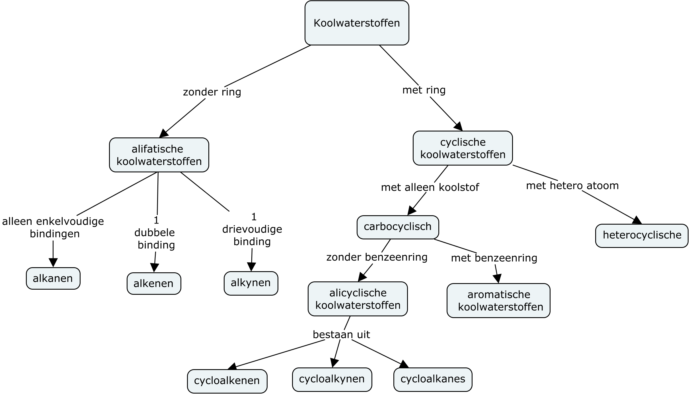
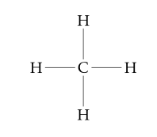
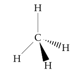
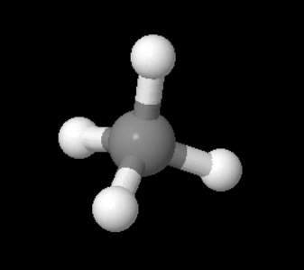
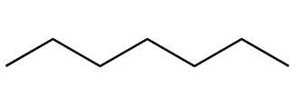
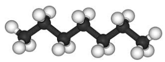
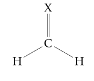
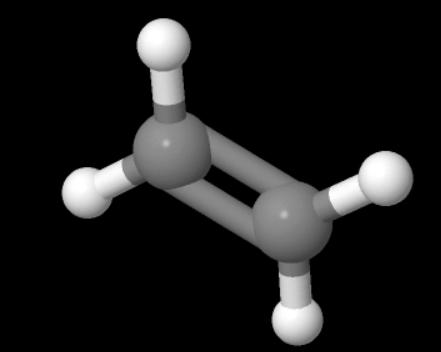

Organische scheikunde of koolstofchemie is de scheikunde van verbindingen met het koolstofatoom. Het koolstofatoom heeft een covalentie 1 van 4. Dit geeft koolstof een grote flexibiliteit om moleculaire stoffen te maken met andere niet-metaalatomen. Een koolstofatoom kan zich ook gemakkelijk binden met een ander koolstofatoom en op deze manier een keten of ring vormen. Deze unieke eigenschap maakt koolstof een essentieel ruggengraat-atoom voor de vorming van macromoleculen. Naast koolstof zijn de andere meest voorkomende elementen in organische verbindingen waterstof (valentie 1), zuurstof (valentie 2), stikstof (valentie 3), zwavel (valentie 2) en halogenen (valentie 1).
Dit levert een groot aantal mogelijke moleculen op. Het classificeren van verschillende soorten van organische moleculen is daarom belangrijk voor een verdere studie. De meest eenvoudige organische moleculen zijn de koolwaterstoffen die bestaan uit alleen koolstof en waterstof atomen en soms een enkel ander atoom. Voorbeelden van koolwaterstoffen zijn de fossiele brandstoffen, zoals methaan en butaan, maar ook de plastics. In het onderstaande schema kun je zien in welke subgroepen we deze koolwaterstoffen weer kunnen onderverdelen. Daarbij maken we allereerst een onderscheid tussen koolwaterstoffen met en zonder een ringstructuur. Koolwaterstoffen met een maximaal aantal waterstofatomen bestaan alleen uit enkelvoudige bindingen en heten verzadigde koolwaterstoffen en anders zijn het onverzadigde koolwaterstoffen.

Naast de koolwaterstoffen zijn er nog vele andere groepen van organische moleculen. Deze zijn meestal kenmerkend aan de hand van een groep atomen die aan een koolstof atoom zijn gebonden. Dit heet dan een een functionele groep.
De chemische reactiviteit wordt voornamelijk bepaald door deze functionele groepen. Een koolwaterstof heeft weinig andere chemische reactiviteit dan een verbrandingsreactie.
Alkanen
Het meest eenvoudige organische molecuul is methaan. Methaan is een alkaan met 1 koolstofatoom.
We kunnen dit molecuul op verschillende manieren weergeven.
molecuul formule: in een molecuul formule tonen we alleen het aantal atomen van elke soort in het molecuul:
\[
\ce{CH4}
\]
structuur formule: in een structuur formule tonen we het aantal atomen en hun verbindingen, het koolstof atoom is het centrale atoom:

ruimtelijke tekening: in een ruimtelijke tekening tonen we het aantal atomen, hun verbindingen en de ruimtelijke ligging van de atomen, een rechte lijn impliceert een verbinding in hetzelfde vlak, een vet driehoekje een verbinding naar voren, en een gestreepte driehoek een verbinding naar achteren:

3D model: in een 3D model, ook wel een ball and stick model genoemd, tonen in een ruimtelijke tekening tonen we het aantal atomen, hun verbindingen, de ruimtelijke ligging van de atomen de bindingshoek en de bindingslengte. De bindingshoek tussen twee koolstofverbindingen is 109.5$^\circ$ en het geheel vormt een tetraëder. Een tetraëder bestaat uit 4 gelijkzijdige driehoeken die allen langs de zijden aan elkaar verbonden zijn. In de ruimtelijke structuur van bijvoorbeeld methaan bevindt het C-atoom zich in het centrum van de tetraëder en de 4 H-atomen op de 4 hoekpunten:

We kunnen alkanen vormen met meerdere koolstofatomen door een waterstof atoom te vervangen door een methyl groep, $\ce{-CH3}$, een methyl is een radicaal2. Zo ontstaat uit methaan ethaan $\ce{CH3-CH3}$. Uit ethaan ontstaat propaan $\ce{CH3-CH3-CH3}$ enzovoort.
Een alkylgroep is een functionele groep afgeleid van alkanen. Dergelijke groepen bevatten enkel koolstof- en waterstofatomen en zijn van de vorm $C_nH_{2n+1}$. Ze missen dus een waterstof atoom in vergelijking met het alkaan. Het zijn radicalen. Door ze aaneen te rijgen ontstaan alkanen met lange koolstofketens.
Overigens kunnen deze alkylgroepen zich ook als een tak aan de stam van een alkaan hechten. De stam is dan de langste reeks van koolstofatomen.
Een compact ruimtelijke weergave van een organisch molecuul is de zogenaamde skelet formule. Daarbij geeft men de verbinding tussen twee koolstof atomen met een zig-zag lijn weer zonder daarbij de koolstof en waterstof atomen weer te geven. Zie bijvoorbeeld de skelet formule voor heptaan. Heptaan heeft 7 koolstofatomen en 16=2x3+5x2=7x2+2 waterstofatomen.


We kunnen eenvoudig de volgende algemene molecuulformule afleiden voor alkanen: $CH_3-CH_2-...-CH_2CH_3$ waaruit volgt $C_nH_{2n+2}$.
Alkanen eindigen op -aan en hebben een prefix dat het aantal koolstofatomen aangeeft. Op historische gronden de nummers 1-4 zijn genoemd: meth, eth, prop en but maar vanaf 5 worden de Griekse woorden voor getallen gebruikt
meth: 1
eth: 2
prop: 3
but: 4
pent: 5
hex: 6
hept: 7
oct: 8
non: 9
dec: 10
Dus de eerste 10 alkanen zijn: methaan, ethaan, propaan, butaan, pentaan, hexaan, septaan, octaan, nonaan, decaan.
Methaan tot aan butaan zijn gassen, pentaan tot ongeveer $\ce{C17H36}$ zijn vloeistoffen, en de rest zijn
vaste stoffen. De alkanen zijn in het algemeen kleurloos en apolair3.
Alkanen zijn zeer brandbaar. Zoals alle koolwaterstoffen reageren ze bij ontsteking met zuurstof waarbij kooldioxide en water worden gevormd en er warmte vrijkomt.
Alkenen
We kunnen van een methaan molecuul ook twee waterstofatomen weghalen, zodat een $\ce{CH2=}$ groep ontstaat, en hieraan een atoom met een dubbele binding vastmaken. De ruimtelijke structuur die dan ontstaat is een vlakke driehoek met bindingshoeken van $120^\circ$.

Etheen, $\ce{C2H4}$ of $\ce{C2H=C2H}$ is een alkeen waarbij er een dubbele binding is tussen de twee koolstof atomen.

Voetnoten
het aantal mogelijke atoombindingen, bepaald door het aantal elektronen dat nodig is om de buitenste schil (valentie-elektronen) op te vullen tot 2 of 8 elektronen
een deeltje met één of meer ongepaarde elektronen, dus met een oneven aantal elektronen